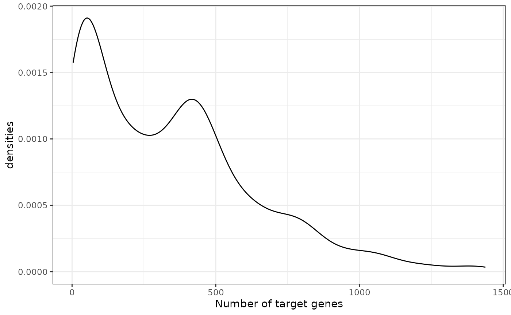
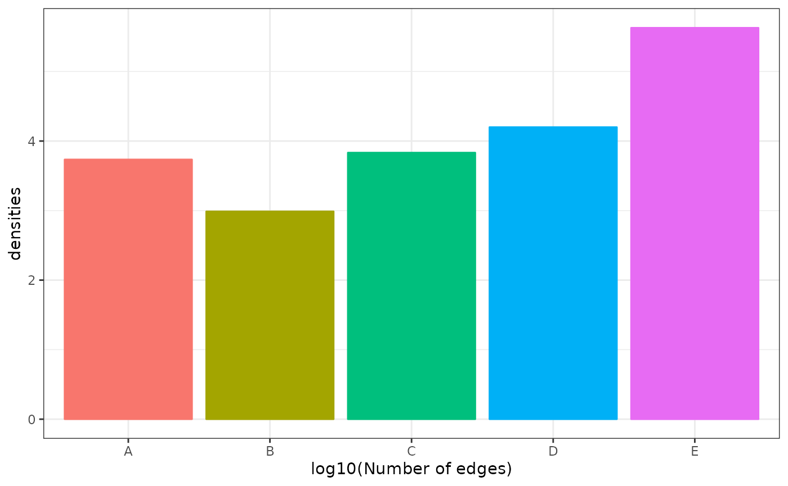
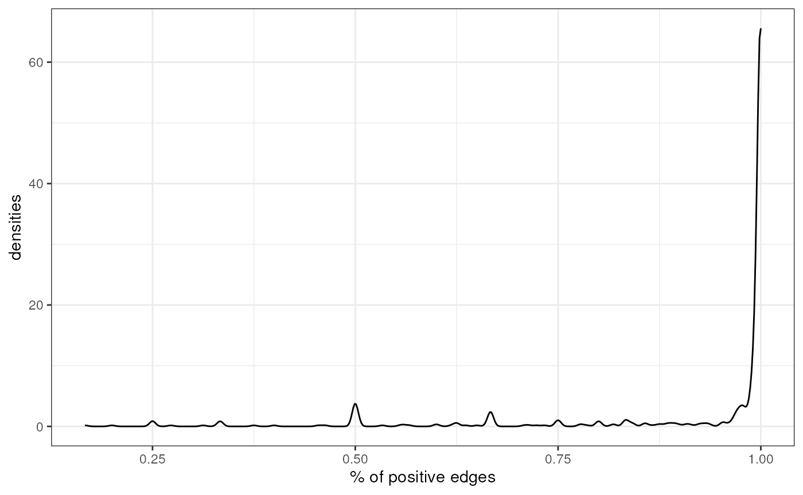

DoRothEA regulons.
Pau Badia i Mompel
Institute for Computational Biomedicine, Heidelberg Universitypau.badia@uni-heidelberg.de Source:
vignettes/dorothea.Rmd
dorothea.RmdIntroduction
DoRothEA is a gene regulatory network containing signed transcription factor (TF) - target gene interactions. DoRothEA regulons, the collection of TFs and their transcriptional targets, were curated and collected from different types of evidence for both human and mouse.

For each TF-target interaction we assigned a confidence level based on the number of supporting evidence. The confidence assignment comprises five levels, ranging from A (highest confidence) to E (lowest confidence). Interactions that are supported by all four lines of evidence, manually curated by experts in specific reviews, or supported both in at least two curated resources are considered to be highly reliable and were assigned an A level. Level B-D are reserved for curated and/or ChIP-seq interactions with different levels of additional evidence. Finally, E level is used for interactions that are uniquely supported by computational predictions. To provide the most confident regulon for each TF, we aggregated the TF-target interactions with the highest possible confidence score that resulted in a regulon size equal to or greater than ten targets. The final confidence level assigned to the TF regulon is the lowest confidence score of its component targets.
DoRothEA regulons can be coupled with any statistical method to infer TF activities from bulk or single-cell transcriptomics. In this vignette we show how to access these regulons and some of their properties. To infer TF activities, please check out decoupleR, available in R or python.
Load
First we load the necessary packages:
Here is how to retrieve all regulons from human:
net <- dorothea::dorothea_hs
head(net)## # A tibble: 6 x 4
## tf confidence target mor
## <chr> <chr> <chr> <dbl>
## 1 ADNP D ATF7IP 1
## 2 ADNP D DYRK1A 1
## 3 ADNP D TLK1 1
## 4 ADNP D ZMYM4 1
## 5 ADNP D ABCC1 1
## 6 ADNP D ABCC6 1Here we can observe some of the target genes for the TF ADNP. We can see their confidence level, in this case D, and their mode of regulation, in this case positive. To better estimate TF activities, we recommend to select regulons from the confidence levels A, B and C.
Exploration
We can observe the total number of genes per TF:
n_genes <- net %>%
group_by(tf) %>%
summarize(n = n())
ggplot(data=n_genes, aes(x=n)) +
geom_density() +
theme(text = element_text(size=12)) +
xlab('Number of target genes') +
ylab('densities') +
theme_bw() +
theme(legend.position = "none")
The majority of TFs have around 20 target genes, but there are some that reach more than 1000.
Additionally, we can visualize how many edges each confidence level adds:
n_edges <- net %>%
group_by(confidence) %>%
summarize(n = n())
ggplot(data=n_edges, aes(x=confidence, y=log10(n), color=confidence, fill=confidence)) +
geom_bar(stat="identity") +
theme(text = element_text(size=12)) +
xlab('log10(Number of edges)') +
ylab('densities') +
theme_bw() +
theme(legend.position = "none")
Each confidence level contributes around 10,000 TF - target relationships, B and E being the exceptions.
We can also check how many TFs are repressors, TFs with most of their edges with negative mode of regulation (mor), and how many are activators, TFs with most of their edges with positive mor:
prop <- net %>%
group_by(tf, mor) %>%
summarize(n = n()) %>%
mutate(freq = n / sum(n)) %>%
filter(mor == 1)## `summarise()` has grouped output by 'tf'. You can override using the `.groups` argument.
ggplot(data=prop, aes(x=freq)) +
geom_density() +
theme(text = element_text(size=12)) +
xlab('% of positive edges') +
ylab('densities') +
theme_bw() +
theme(legend.position = "none")
Most TFs in DoRothEA are activators, but there are also some of them that are repressors.